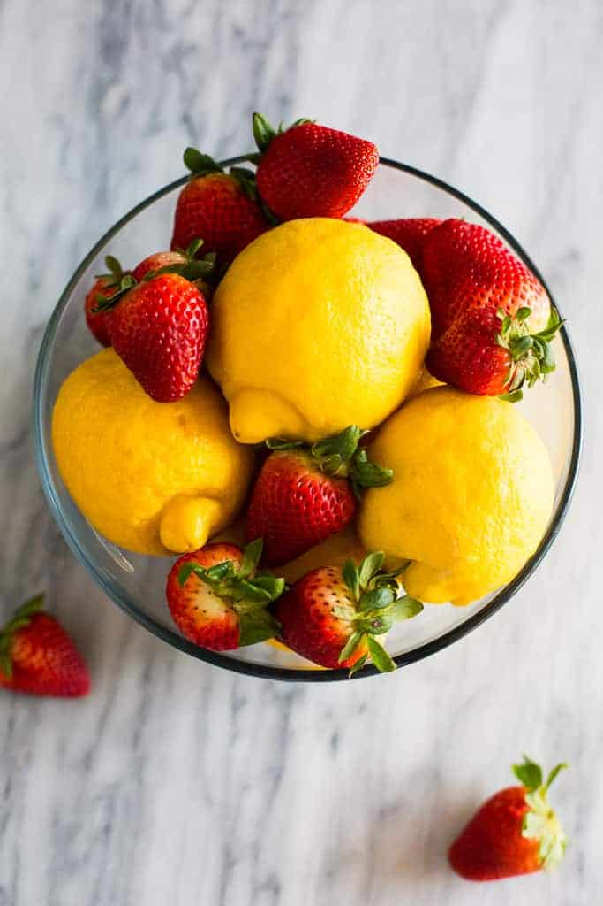

Strawberry lemonade is one of my favorite summer drinks, and since the weather is finally warming up, I thought I'd share a simple recipe that everyone can make at home!
I also thought it would be fun to incorporate the fun, bright colors of strawberry lemonade into my instructable design.
My siblings and I used to always hold lemonade stands when we were growing up, so it always brings back good memories. :)
If you would like to learn more, visit Tastes Better from Scratch!
